Topic 2: Functional Programming¶
1. The Functional Programming Paradigm¶
1.1. Past and Present of the Functional Paradigm¶
1.1.1. Definition and Characteristics¶
In a very brief and concise definition, functional programming defines a program in the following way:
Definition of functional program
In functional programming, a program is a set of mathematical functions that convert inputs into outputs, without any internal state and no side effects.
We will talk later about the non-existence of internal state (variables in which values are saved and modified) and the absence of side effects. Let's say that these are also characteristics of declarative programming (compared to traditional imperative programming, which is what is used in languages like C or Java). In this sense, functional programming is a specific type of declarative programming.
The main characteristics of the functional paradigm are:
- Definitions of pure mathematical functions, without internal state or side effects
- Immutable values
- Profuse use of recursion in the definition of functions
- Using lists as fundamental data structures
- Functions as primitive data types: lambda expressions and higher-order functions
We will explain these properties below.
1.1.2. Historical Origins¶
In the 1930s, along with the Turing machine, different equivalent computational models were proposed that formalized the concept of algorithm. One of these models was the one called Lambda calculus proposed by Alonzo Church in the 1930s and based on the evaluation of mathematical expressions. In this formalism the algorithms are expressed through mathematical functions in which recursion can be used. A mathematical function takes input parameters and returns a value. The evaluation of the function is carried out by evaluating its mathematical expressions by replacing the formal parameters with the real values that are used in the invocation (the so-called substitution model that we will see later).
Lambda calculus is a mathematical formalism, based on abstract operations. Two decades later, when the first electronic computers were beginning to be used in large companies and universities, this formalism gave rise to something much more tangible and practical: a high-level language, much more expressive than assembly, with which to express operations and functions that can be defined and evaluated on the computer, the Lisp programming language.
1.1.3. History and Characteristics of Lisp¶
- Lisp is the first high-level programming language based on the functional paradigm.
- Created in 1958 by John McCarthy.
- Lisp was in its time a revolutionary language that introduced new programming concepts that did not exist then: functions as primitive objects, higher-order functions, polymorphism, lists, recursion, symbols, homogeneity of data and programs, REPL loop (Read-Eval-Print Loop)
- The legacy of Lisp reaches languages derived from it (Scheme, Common Lisp) and new languages of non-strictly functional paradigms, such as C#, Python, Ruby, Objective-C or Scala.
Lisp was the first interpreted programming language, with many dynamic features that are executed at run-time. Among these features we can highlight memory management (automatic creation and destruction of memory reserved for data), the detection of exceptions and errors at run time or the run-time creation of anonymous functions (lambda expressions). All these features are executed through a runtime system (runtime system) present in the execution of the programs. Since Lisp, many other languages have used these interpretation or runtime system features. For example, languages such as BASIC, Python, Ruby or JavaScript are interpreted languages. And languages like Java or C# have an advanced runtime platform with support for dynamic memory management (garbage collection, garbage collection) or compilation just in time.
Lisp is not an exclusively functional language. Lisp was designed with the objective of being a high-level language capable of solving practical Artificial Intelligence problems, not with the idea of being a formal language based on a single computing model. For this reason, in Lisp (and in Scheme) there are primitives that go beyond the pure functional paradigm and allow programming in an imperative (non-declarative) way, using state mutation and execution steps.
However, during the first part of the course in which we will study functional programming, we will not use the imperative instructions of Scheme but will write exclusively functional code.
1.1.4. Functional Programming Languages¶
In the 1960s, functional programming defined by Lisp was dominant in Artificial Intelligence research departments (MIT, for example). In the 70s, 80s and 90s it was increasingly relegated to academic and research niches; Imperative and object-oriented languages prevailed in industry.
In the first decade of the 2000s, languages have appeared that evolve from Lisp and that highlight its functional aspects, although updating its syntax. We highlight among them:
There is also a trend since the mid-2000s to include functional aspects such as lambda expressions or higher-order functions in object-oriented imperative languages, giving rise to multi-paradigm languages:
Finally, an exclusively functional language like Haskell has also become popular in the 2010s. This language, unlike Scheme and other multi-paradigm languages, does not have any imperative element and makes all its expressions purely functional.
1.1.5. Practical Applications of Functional Programming¶
Currently, the functional paradigm is a fashionable paradigm, as can be seen by observing the number of articles, talks and blogs in which it is discussed, as well as the number of languages that are applying its concepts. For example, just as a sample, below you can find some links to interesting talks and articles recently published on functional programming:
- Lupo Montero - Introduction to functional programming in JavaScript (Blog)
- Andrés Marzal - Why you should learn functional programming right now (Talk on YouTube)
- Mary Rose Cook - A practical introduction to functional programming (Blog)
- Ben Christensen - Functional Reactive Programming in the Netflix API (InfoQ Talk)
The recent rise of these languages and the functional paradigm is due to several factors, among them that it is a paradigm that facilitates:
- the programming of concurrent systems, with multiple threads of execution or with multiple computers executing concurrent connected processes.
- the definition and composition of multiple operations on streams in a very concise and compact way, applicable to the programming of distributed systems on the Internet.
- interactive and evolutionary programming.
1.1.5.1. Programming Concurrent Systems¶
We will see later that one of the main characteristics of functional programming is that mutation is not used (the values assigned to variables or parameters are not modified). This property makes it an excellent paradigm for implementing concurrent programs, in which there are multiple threads of execution. Programming concurrent systems is very complicated with the traditional imperative paradigm, in which modifying the state of a variable shared by more than one thread can cause race conditions and errors that are difficult to locate and reproduce.
As Bartosz Milewski, computer science researcher and theorist, says in his answer on Quora to the question why do software engineers like functional programming?:
Bartosz Milewski: Why is functional programming popular?
Because it is the only practical way to write concurrent programs. Trying to write concurrent programs in imperative languages is not only difficult, but it leads to bugs that are very difficult to discover, reproduce and fix. Imperative languages, and particularly object-oriented languages, hide mutations and inadvertently share data, making them extremely prone to concurrency errors caused by race conditions.
1.1.5.2. Defining and Composing Operations on Streams¶
The functional paradigm has given rise to a style of programming on streams
of data, in which operations such as filter or map are concatenated to
simply define asynchronous processes and transformations applicable to the
elements of the stream. This programming style has made possible new
programming ideas, such as reactive, event-based programming, or futures
or promises widely used in very popular languages such as JavaScript to make
asynchronous requests to web services.
For example, the article Exploring the virtues of microservices with Play and Akka explains in detail the advantages of using languages and primitives to work with asynchronous event-based systems in services like Tumblr or Netflix.
Another example is using Scala on Tumblr with which it is possible to create code that has no shared state and that is easily parallelizable between the more than 800 servers necessary to handle peaks of more than 40,000 requests per second:
Using Scala on Tumblr
Scala promotes that it has not been shared. Mutable state is avoided by using statements in Scala. No long-running state machines are used. The state is taken out of the database, used, and written back to the database. The main advantage is that developers do not have to worry about threads or locks.
1.1.5.3. Evolutionary Programming¶
In the programming methodology called evolutionary programming or iterative, complex programs are built by defining and testing increasingly complicated computational elements. Functional programming languages fit perfectly into this way of building programs.
As Abelson and Sussman comment in the book Structure and Implementation of Computer Programs (SICP):
Abelson and Sussman on incremental programming
In general, computational objects can have very complex structures, and it would be extremely inconvenient to have to remember and repeat their details every time we want to use them. Instead, complex programs are built by composing, step by step, computational objects of increasing complexity.
The interpreter makes this step-by-step construction of programs particularly convenient because name-object associations can be created incrementally in successive interactions. This feature favors incremental program development and testing, and is largely responsible for the fact that a Lisp program typically consists of a large number of relatively simple procedures.
Do not confuse a programming methodology with a programming paradigm. A programming methodology provides suggestions on how we should design, develop and maintain an application that will be used by end users. Functional programming can be used with multiple programming methodologies, because the resulting programs are very clear, expressive, and easy to test.
1.2. Evaluating Expressions and Defining Functions¶
In the course we will use Scheme as the first language in which we will explore functional programming.
In the Scheme seminar taught in the lab sessions, the most important concepts of the language are studied in more depth: data types, operators, control structures, interpreter, etc.
1.2.1. Evaluating Expressions¶
We begin this section by seeing how Scheme expressions are defined and evaluated. And then we'll see how to build new functions.
Scheme is a language that comes from Lisp. One of its main characteristics is that expressions are constructed using parentheses.
Examples of expressions in Scheme, along with the result of their execution:
2 ; ⇒ 2
(+ 2 3) ; ⇒ 5
(+) ; ⇒ 0
(+ 2 4 5 6) ; ⇒ 17
(+ (* 2 3) (- 3 1)) ; ⇒ 8
In functional programming, instead of saying "execute an expression" we say "evaluate an expression", to reinforce the idea that these are mathematical expressions that always return one and only one result.
Expressions are defined with a prefix notation: the first element after the opening parenthesis is the operator of the expression and the rest of the elements (up to the closing parenthesis) are its operands.
-
For example, in the expression
(+ 2 4 5 6)the operator is the symbol+which represents sum function and the operands are the numbers 2, 4, 5 and 6. -
There may be expressions that do not have operands, such as the example
(+), whose evaluation returns 0.
A fundamental idea of Lisp and Scheme is that parentheses are evaluated from inside to outside. For example, the expression
(+ (* 2 3) (- 3 (/ 12 3)))
which returns 5, is evaluated like this:
(+ (* 2 3) (- 3 (/ 12 3))) ⇒
(+ 6 (- 3 (/ 12 3))) ⇒
(+ 6 (- 3 4)) ⇒
(+ 6 -1) ⇒
5
The evaluation of each expression returns a value that is used to continue calculating the outer expression. In the previous case
- First the expression
(* 2 3)is evaluated which returns 6, (/ 12 3)is then evaluated which returns 4,(- 3 4)is then evaluated which returns -1- and finally
(+ 6 -1)is evaluated, which returns 5
When an expression is evaluated in the Scheme interpreter the result appears on the next line.
1.2.2. Defining Functions¶
In functional programming, functions are similar to mathematical functions: they receive parameters and always return a single result from operating with those parameters.
For example, we can define the function (cuadrado x) that returns the square
of a number that we pass as a parameter:
(define (cuadrado x)
(* x x))
After the name of the function its arguments are declared. The number of
arguments to a function is called the arity of the function. For example,
the function cuadrado is a function of arity 1, or unary.
After declaring the parameters, the function body is defined. It is an
expression that will be evaluated with the value passed as a parameter. In the
previous case the expression is (* x x) and it will multiply the parameter
by itself.
It should be noted that in Scheme there is no return keyword, but functions
are always defined with a single expression whose evaluation is the result
that is returned.
Once the cuadrado function is defined we can use it in the same way as the
primitive Scheme functions:
(cuadrado 10) ; ⇒ 100
(cuadrado (+ 10 (cuadrado (+ 2 4)))) ; ⇒ 2116
The evaluation of the last expression is done as follows:
(cuadrado (+ 10 (cuadrado (+ 2 4)))) ⇒
(cuadrado (+ 10 (cuadrado 6))) ⇒
(cuadrado (+ 10 36)) ⇒
(cuadrado 46) ⇒
2116
1.2.3. Defining Helper Functions¶
The defined functions can in turn be used to construct other functions.
The usual thing in functional programming is to define very small functions and build increasingly higher-order functions using the previous ones.
1.2.3.1. Example: Sum of Squares¶
For example, suppose we have to define a function that returns the sum of the square of two numbers. We could define it by writing the complete expression, but the definition remains poorly readable.
; Definición poco legible de la suma de cuadrados
(define (suma-cuadrados x y)
(+ (* x x)
(* y y)))
We can make a much more readable definition if we use the cuadrado function
defined above:
; Definición de suma de cuadrados más legible.
; Usamos la función auxiliar 'cuadrado'
(define (cuadrado x)
(* x x))
(define (suma-cuadrados x y)
(+ (cuadrado x)
(cuadrado y)))
This second definition is much more expressive. Reading the code it is very clear what we want to do.
1.2.3.2. Example: Impact Time¶
Let's look at another example of using auxiliary functions. Suppose we are programming a war game about ships and submarines, in which we use the coordinates of the plane to place all the elements of our fleet.
Suppose we need to calculate the time it takes for a torpedo to get from a
position (x1, y1) to another (x2, y2). We assume that the speed of the
torpedo is another parameter v.
How would we calculate this impact time?
The least correct way to do this is to define the entire calculation in a single expression. Since in functional programming the functions must be defined with a single expression, we must perform the entire calculation in the form of nested expressions, one inside another. This builds a function that calculates the result well. The problem it has is that it is very difficult to read and understand for a colleague (or for ourselves, when a few months pass):
;
; Definición incorrecta: muy poco legible
;
; La función tiempo-impacto devuelve el tiempo que tarda
; en llegar un torpedo a la velocidad v desde la posición
; (x1, y1) a la posición (x2, y2)
;
(define (tiempo-impacto x1 y1 x2 y2 v)
(/ (sqrt (+ (* (- x2 x1) (- x2 x1))
(* (- y2 y1) (- y2 y1))))
v))
The previous function does the calculation well but is very complicated to modify and understand.
The most correct way to define the function would be using several auxiliary functions. Note that it is also very important to give the correct names to each function, to understand what it does. Scheme is a weakly typed language and we don't have the help of types that give us more context of what each parameter is and what the function returns.
; Definición correcta, modular y legible de la función tiempo-impacto
;
; La función 'cuadrado' devuelve el cuadrado de un número
;
(define (cuadrado x)
(* x x))
;
; La función 'distancia' devuelve la distancia entre dos
; coordenadas (x1, y1) y (x2, y2)
;
(define (distancia x1 y1 x2 y2)
(sqrt (+ (cuadrado (- x2 x1))
(cuadrado (- y2 y1)))))
;
; La función 'tiempo' devuelve el tiempo que
; tarda en recorrer un móvil una distancia d a un velocidad v
;
(define (tiempo distancia velocidad)
(/ distancia velocidad))
;
; La función 'tiempo-impacto' devuelve el tiempo que tarda
; en llegar un torpedo a la velocidad v desde la posición
; (x1, y1) a la posición (x2, y2)
;
(define (tiempo-impacto x1 y1 x2 y2 velocidad)
(tiempo (distancia x1 y1 x2 y2) velocidad))
In this second version we define more functions, but each one is much more
readable. In addition, we will be able to reuse functions like cuadrado,
distancia or tiempo for other calculations.
1.2.4. Pure Functions¶
Unlike what we have seen in imperative programming, in functional programming it is not possible to define functions with local state. The functions defined are pure mathematical functions, which meet the following conditions:
- They do not modify the parameters passed to them
- They return a single result
- They do not have a local state nor does the result depend on a mutable external state.
This last property is very important and means that the function always returns the same value when the same parameters are passed to it.
Pure functions are very easy to understand because there is no need to take into account any context when describing their operation. The returned value solely depends on the input parameters.
For example, mathematical functions such as addition, subtraction, square, sin, cos, etc. fulfill this property.
1.2.5. Function Composition¶
A fundamental idea of functional programming is the composition of functions that transform input data into output data. It is a very current idea, because it is the way in which many data processing algorithms in artificial intelligence are proposed.
For example, we can represent the algorithm that drives an autonomous vehicle in the following way:
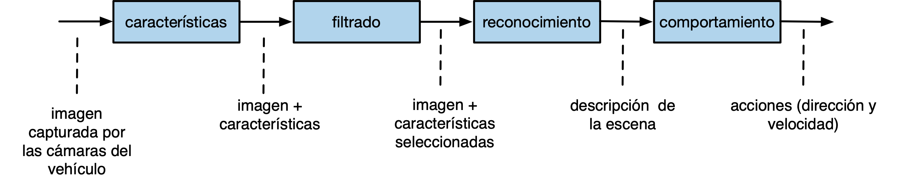
The boxes represent functions that transform the input data (images taken by the vehicle's cameras) into the output data (actions to be performed on the vehicle's steering and engine). Intermediate functions represent transformations that are performed on the input data and obtain the output data.
In a functional programming language like Scheme, the above diagram would be written with the following code:
(define (conduce-vehiculo imagenes)
(obten-acciones
(reconoce
(filtra
(obten-caracteristicas imagenes)))))
We will see later that expressions in Scheme are evaluated from inside to outside and that they have prefix notation. The result of each function constitutes the input of the next one.
In the case of the conduce-vehiculo function, the characteristics of the
images are first obtained, then they are filtered, then the scene is
recognized and, finally, the actions to drive the vehicle are obtained.
1.3. Declarative vs. Imperative Programming¶
We have said that functional programming is a declarative programming style, compared to the traditional programming of so-called imperative languages. Let's explain this a little more.
1.3.1. Declarative Programming¶
Let's start with what we all know: an imperative program. It is a set of instructions that are executed one after another (execution steps) sequentially. During the execution of these instructions, the values of the variables are changed and, depending on these values, the control flow of the program execution is modified.
To understand how an imperative program works we must imagine the entire evolution of the program, the steps that are executed and what the control flow is based on the changes in the values in the variables.
In declarative programming, however, we use a totally different paradigm. We speak of declarative programming to refer to programming languages (or code statements) in which the values, objectives or characteristics of the program elements are declared and in whose execution there is no mutation (modification of variable values) or sequences of execution steps.
In this way, the execution of a declarative program has more to do with some formal or mathematical model than with a traditional imperative program. Defines a set of mathematical style rules and definitions.
Declarative programming is not exclusive to functional languages. There are many non-functional languages with declarative features. For example Prolog, in which a program is defined as a set of logical rules and its execution performs a mathematical logical deduction that returns a result. In this execution, the internal steps carried out by the system are not relevant, but rather the logical relationships between the data and the final results.
A clear example of declarative programming is a spreadsheet. Cells contain values or mathematical expressions that are automatically updated when we change the input values. The relationship between values and results is completely mathematical and for its calculation we do not have to take execution steps into account. Obviously, underneath the spreadsheet there is a program that performs the calculation of the spreadsheet, but when we are using it we are not concerned with that implementation. We can not worry about it and only use the mathematical model defined on the sheet.
Another very current example of declarative programming is SwiftUI, the new API created by Apple to define the user interfaces of iOS applications.
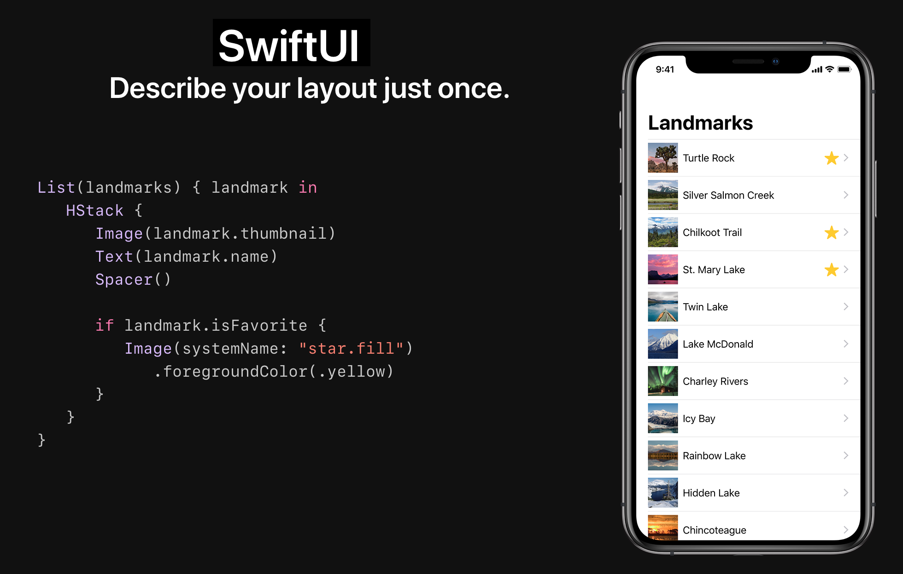
In the image code we see a description of how the application is defined: a vertically stacked list of places (landmarks). For each place you define its image, its text, and a star if the place is a favorite.
The code is declarative because there are no execution steps to define the interface. There is no loop that adds elements to the interface. We see a declaration of how the interface will be defined. The language compiler and the API are responsible for building that declaration and displaying the interface as we want.
1.3.1.1. Function Declarations¶
Functional programming uses a declarative programming style. We declare functions in which input data is transformed into output data. We will see that this transformation is carried out by evaluating expressions, without defining intermediate values, auxiliary variables, or execution steps. Only calls to auxiliary functions that construct the resulting value are composed.
As we have already seen, the following example is a declaration in Scheme of a function that takes a number as input and returns its square:
(define (cuadrado x)
(* x x))
In the body of the cuadrado function we see that no auxiliary variable is
used, but only the * (multiplication) function is called passing the value
of x. The resulting value is what is returned.
For example, if we call the function passing the parameter 4, it returns the
result of multiplying 4 by itself, 16.
(cuadrado 4) ; ⇒ 16
1.3.2. Imperative Programming¶
Let's review some characteristics of imperative programming that do not exist in functional programming. They are characteristics that we are very accustomed to because they are typical of the most popular languages and with which we have learned to program (C, C++, Java, python, etc.)
- Execution steps
- Mutation
- Side effects
- Mutable local state in functions
We will see that, although it seems impossible, it is possible to program without using these features. This is demonstrated by functional programming languages such as Haskell, Clojure or Scheme itself.
1.3.2.1. Execution Steps¶
One of the basic characteristics of imperative programming is the use of execution steps. For example, in C we can perform the following execution steps:
int a = cuadrado(8);
int b = doble(a);
int c = cuadrado(b);
return c
Or, for example, if we want to filter and process a list of orders in Swift we can do it in two statements:
filtrados = filtra(pedidos);
procesados = procesa(filtrados);
return procesados;
However, in functional programming (e.g. Scheme) there are no execution steps separated by statements. As we have seen before, the typical way of expressing the above instructions is to compose all the operations in a single instruction:
(cuadrado (doble (cuadrado 8))) ; ⇒ 16384
We can compose the second example in the same way:
(procesa (filtra pedidos))
1.3.2.2. Mutation¶
In imperative languages it is common to modify the value of variables in the execution steps:
int x = 10;
int x = x + 1;
The x = x + 1 expression is an
assignment
expression that modifies the previous value of a variable to a new value. The
state of the variables (their value) changes with the execution of the
program steps.
This assignment that modifies an already existing value is called destructive assignment or mutation.
In imperative programming you can also modify (mutate) the value of components of data structures, such as positions of an array, a list or a dictionary.
In functional programming, on the other hand, definitions are immutable, and once a value is assigned to an identifier it cannot be modified. In functional programming there is no assignment statement that can modify an already defined value. Variables are understood as mathematical variables, not as references to memory locations that can be modified.
For example, the special form define in Scheme creates a new identifier and
gives it the permanently defined value. If we write the following code in a
program in Scheme:
#lang racket
(define a 12)
(define a 200)
we will have the following error:
module: identifier already defined in: a
Note
In the DrRacket REPL interpreter we can define the same function or identifier more than once. It is designed to facilitate the use of the interpreter for testing expressions in Scheme.
In imperative programming languages it is common to also introduce declarative statements. For example, in the following Java code we could consider lines 1 and 3 declarative and lines 2 and 4 imperative:
1. int x = 1;
2. x = x+1;
3. int y = x+1;
4. y = x;
1.3.2.3. Mutation and Side Effects¶
In imperative programming it is also common to work with references and have more than one identifier refer to the same value. This raises the possibility that mutating the value through one of the identifiers produces a side effect in which the value of an identifier changes without executing any expression that explicitly uses the identifier itself.
For example, in most object-oriented languages, identifiers hold references to objects. So if we assign an object to more than one identifier, all the identifiers are accessing the same object. If we mutate any value of the object through an identifier we cause a side effect on the other identifiers.
For example, the following is an example of a mutation in imperative programming, in which the attributes of an object are modified in Java:
Point2D p1 = new Point2D(3.0, 2.0); // creamos un punto 2D con coordX=3.0 y coordY=2.0
p1.getCoordX(); // la coord x de p2 es 3.0
p1.setCoordX(10.0);
p1.getCoordX(); // la coord x de p1 es 10.0
If the object is assigned to more than one variable we will have the side effect (side effect) in which the data stored in a variable changes after a statement in which that variable has not been used:
Point2D p1 = new Point2D(3.0, 2.0); // la coord x de p1 es 3.0
p1.getCoordX(); // la coord x de p1 es 3.0
Point2D p2 = p1;
p2.setCoordX(10.0);
p1.getCoordX(); // la coord x de p1 es 10.0, sin que ninguna sentencia haya modificado directamente p1
The same previous example, in C:
typedef struct {
float x;
float y;
}TPunto;
TPunto p1 = {3.0, 2.0};
printf("Coordenada x: %f", p1.x); // 3.0
TPunto *p2 = &p1;
p2->x = 10.0;
printf("Coordenada x: %f", p1.x); // 10.0 Efecto lateral
Side effects are responsible for many bugs and you have to be very aware of their use. Bugs due to side effects are especially difficult to debug in concurrent programs with multiple threads of execution, in which several threads can access the same references and cause race conditions.
On the other hand, there are also situations in which its use allows us to gain a lot of efficiency because we can define data structures in which the values are shared by several references and by modifying a single value those references are instantly updated.
In languages where mutation does not exist, side effects do not occur, since it is not possible to modify the value of a variable once it is established. The programs that we write in these languages will be free of this type of bugs and will be able to be executed without problems in concurrent execution threads.
On the other hand, the absence of mutation makes certain operations, such as the construction of new data structures from existing structures, somewhat more expensive. We will see, for example, that the only way to add an element to the end of a list will be to construct a new list with all the elements of the original list and the new element. This operation has a cost linear with the number of elements in the list. However, in a list where we could use mutation we could implement this operation with constant cost.
1.3.2.4. Mutable Local State¶
Another feature of imperative programming is what is called mutable local state in functions, procedures or methods. This is the possibility that an invocation of a method or function modifies a certain state, so that the next invocation returns a different value. It is a basic characteristic of object-oriented programming, where objects store values that are modified with invocations to their methods.
For example, in Java, we can define a counter that increments its value:
public class Contador {
int c;
public Contador(int valorInicial) {
c = valorInicial;
}
public int valor() {
c++;
return c;
}
}
Each call to the valor() method will return a different value:
Contador cont = new Contador(10);
cont.valor(); // 11
cont.valor(); // 12
cont.valor(); // 13
You can also define functions with mutable local state in C:
int function contador () {
static int c = 0;
c++;
return c;
}
Each call to the contador() function will return a different value:
contador(); // 1
contador(); // 2
contador(); // 3
On the contrary, functional languages have the property of referential transparency: it is possible to replace any occurrence of an expression with its result without changing the final result of the program. In other words, in functional programming, a function always returns the same value when called with the same parameters. Functions do not modify any state, they do not access any variable or global object and modify their value.
1.3.2.5. Summary¶
A summary of the fundamental characteristics of declarative programming versus imperative programming. In the following sections we will explain these characteristics more.
Characteristics of declarative programming
- Variable = name given to a value (declaration)
- Function composition is used instead of execution steps
- There is no assignment or change of status
- There is no mutation, referential transparency is fulfilled: within the same scope all occurrences of a variable and function calls return the same value
Characteristics of imperative programming
- Variable = name of a memory area
- Assignment
- References
- Execution steps
1.4. The Substitution Model of Computation¶
A computational model is a formalism (set of rules) that defines the operation of a program. In the case of functional languages based on the evaluation of expressions, the computational model defines what the result of evaluating an expression will be.
The substitution model is a very simple model that allows defining the semantics of expression evaluation in functional languages such as Scheme. It is based on a simplified version of the lambda calculus reduction rule.
It is a model based on the rewriting of some terms by others. Although this is an abstract model, it would be possible to write an interpreter that, based on this model, evaluates functional expressions.
Let's assume a set of definitions in Scheme:
(define (doble x)
(+ x x))
(define (cuadrado y)
(* y y))
(define (f z)
(+ (cuadrado (doble z)) 1))
(define a 2)
Suppose that, once these definitions have been made, the following expression is evaluated:
(f (+ a 1))
What will be its result? If we do it intuitively we can think that 37. If we
check it in the Scheme interpreter we will see that it returns 37. Have we
followed any specific rules? What rules do the interpreter follow? Could we
implement a similar interpreter? Yes, using the rules of the substitution
model.
The substitution model defines four simple rules for evaluating an expression. Let's call the expression e. The rules are the following:
- If e is a primitive value (for example, a number), we return that same value.
- If e is an identifier, we return its value associated with a
define(an error will be thrown if that value does not exist). - If e is an expression of the type (f arg1 ... argn), where f is the
name of a primitive function (
+,-, ...), we evaluate the arguments arg1 ... argn one by one (with these same rules) and evaluate the primitive function with the results.
Rule 4 has two variants, depending on the order of evaluation we use.
Applicable order
- If e is an expression of the type (f arg1 ... argn), where f is the
name of a function defined with a
define, we have to first evaluate the arguments arg1 ... argn and then replace f with its body, replacing each formal parameter of the function with the corresponding evaluated argument. We will then evaluate the resulting expression using these same rules.
Normal order
- If e is an expression of the type (f arg1 ... argn), where f is the
name of a function defined with a
define, we have to replace f with its body, replacing each formal parameter of the function with the corresponding unevaluated argument. Then evaluate the resulting expression using these same rules.
In the applicative order, evaluations are performed before substitutions are made, which defines an evaluation from inside to outside the parentheses. When a primitive expression is reached, it is evaluated.
In the normal order all substitutions are made until you have a long expression made up of primitive expressions; it is then evaluated.
Both forms of evaluation will give the same result in functional programming. Scheme uses applicative order.
1.4.1. Example 1¶
Let's start with a simple example to see how the same expression is evaluated using both substitution models. Let us assume the following definitions:
(define (doble x)
(+ x x))
(define (cuadrado y)
(* y y))
(define a 2)
We want to evaluate the following expression:
(doble (cuadrado a))
The evaluation using the applicative-order substitution model, using the previous rules step by step, is as follows (in each line the rule used is indicated in parentheses):
(doble (cuadrado a)) ⇒ ; Sustituimos a por su valor (R2)
(doble (cuadrado 2)) ⇒ ; Sustitumos cuadrado por su cuerpo (R4)
(doble (* 2 2)) ⇒ ; Evaluamos (* 2 2) (R3)
(doble 4) ⇒ ; Sustituimos doble por su cuerpo (R4)
(+ 4 4) ⇒ ; Evaluamos (+ 4 4) (R3)
8
We can verify that in the applicative model the substitutions of a function by its body (rule 4) and the evaluations of expressions (rule 3) are interspersed.
In contrast, the evaluation using the normal-order substitution model is:
(doble (cuadrado a)) ⇒ ; Sustituimos doble por su cuerpo (R4)
(+ (cuadrado a) (cuadrado a) ⇒ ; Sustituimos cuadrado por su cuerpo (R4)
(+ (* a a) (* a a) ⇒ ; Sustitumos a por su valor (R2)
(+ (* 2 2) (* 2 2) ⇒ ; Evaluamos (* 2 2) (R3)
(+ 4 (* 2 2)) ⇒ ; Evaluamos (* 2 2) (R3)
(+ 4 4) ⇒ ; Evaluamos (+ 4 4) (R3)
8
When using this evaluation model, all substitutions are made first (rule 4) and then all evaluations (rule 3).
Substitutions are made from left to right (from outside to inside the
parentheses). First doble is replaced by its body and then cuadrado.
1.4.2. Example 2¶
Let's look at the evaluation of the somewhat more complicated example that we proposed at the beginning:
(define (doble x)
(+ x x))
(define (cuadrado y)
(* y y))
(define (f z)
(+ (cuadrado (doble z)) 1))
(define a 2)
Expression to evaluate:
(f (+ a 1))
Evaluation result using the applicative-order substitution model:
(f (+ a 1)) ⇒ ; Para evaluar f, evaluamos primero su argumento (+ a 1) (R4)
; y sustituimos a por 2 (R2)
(f (+ 2 1)) ⇒ ; Evaluamos (+ 2 1) (R3)
(f 3) ⇒ ; (R4)
(+ (cuadrado (doble 3)) 1) ⇒ ; Sustituimos (doble 3) (R4)
(+ (cuadrado (+ 3 3)) 1) ⇒ ; Evaluamos (+ 3 3) (R3)
(+ (cuadrado 6) 1) ⇒ ; Sustitumos (cuadrado 6) (R4)
(+ (* 6 6) 1) ⇒ ; Evaluamos (* 6 6) (R3)
(+ 36 1) ⇒ ; Evaluamos (+ 36 1) (R3)
37
And let's see the result of using the normal-order substitution model:
(f (+ a 1)) ⇒ ; Sustituimos (f (+ a 1))
; por su definición, con z = (+ a 1) (R4)
(+ (cuadrado (doble (+ a 1))) 1) ⇒ ; Sustituimos (cuadrado ...) (R4)
(+ (* (doble (+ a 1))
(doble (+ a 1))) 1) ; Sustituimos (doble ...) (R4)
(+ (* (+ (+ a 1) (+ a 1))
(+ (+ a 1) (+ a 1))) 1) ⇒ ; Evaluamos a (R2)
(+ (* (+ (+ 2 1) (+ 2 1))
(+ (+ 2 1) (+ 2 1))) 1) ⇒ ; Evaluamos (+ 2 1) (R3)
(+ (* (+ 3 3)
(+ 3 3)) 1) ⇒ ; Evaluamos (+ 3 3) (R3)
(+ (* 6 6) 1) ⇒ ; Evaluamos (* 6 6) (R3)
(+ 36 1) ⇒ ; Evaluamos (+ 36 1) (R3)
37
In functional programming the result of evaluating an expression is the same regardless of the type of order. But if we are outside the functional paradigm and the functions have state and change value between different invocations, it does matter if we choose an order.
For example, suppose a function (random x) returns a random integer between
0 and x. This function would not comply with the functional paradigm,
because it returns a different value with the same input parameter.
We evaluate the following expressions with applicative and normal order, to verify that the result is different.
(define (zero x) (- x x))
(zero (random 10))
If we evaluate the last expression in applicative order:
(zero (random 10)) ⇒ ; Evaluamos (random 10) (R3)
(zero 3) ⇒ ; Sustituimos (zero ...) (R4)
(- 3 3) ⇒ ; Evaluamos - (R3)
0
If we evaluate it in normal order:
(zero (random 10)) ⇒ ; Sustituimos (zero ...) (R4)
(- (random 10) (random 10)) ⇒ ; Evaluamos (random 10) (R3)
(- 5 3) ⇒ ; Evaluamos - (R3)
2
2. Scheme as a Functional Programming Language¶
We have already seen how to define functions and evaluate expressions in Scheme. Let's continue with concrete examples of other functional characteristics of Scheme.
Specifically, we will see:
- Symbols and primitive
quote - Using lists
- Defining recursive functions in Scheme
2.1. Special functions and forms¶
In the Scheme seminar we have seen a set of primitives that we can use in Scheme.
We can classify primitives into functions and special forms. The functions are evaluated using the applicative-order substitution model already seen:
- The arguments are evaluated first, then the function call is replaced with its body and the resulting expression is re-evaluated.
- Expressions are always evaluated from inner to outer parentheses.
Special forms are primitive Scheme expressions that have their own way of evaluating, different from functions.
2.2. Special forms in Scheme¶
Let's see how to evaluate the different special forms in Scheme. In these special forms, the substitution model is not applied, as they are not function invocations, but rather each one is evaluated in a different way.
2.2.1. Special form define¶
Syntax
(define <identificador> <expresión>)
Evaluation
- Evaluate expression
- Associate the resulting value with the identifier
Example
(define base 10) ; Asociamos a 'base' el valor 10
(define altura 12) ; Asociamos a 'altura' el valor 12
(define area (/ (* base altura) 2)) ; Asociamos a 'area' el valor 60
2.2.2. define special form to define functions¶
Syntax
(define (<nombre-funcion> <argumentos>)
<cuerpo>)
Evaluation
Next week we will look at the semantics in more detail, and we will explain
the special form lambda which is what actually creates the function. Today
we stop at the following high-level description of semantics:
- Create the function with the body
- Give the function the name function-name
Example
(define (factorial x)
(if (= x 0)
1
(* x (factorial (- x 1)))))
2.2.3. Special form if¶
Syntax
(if <condition> <true-expression> <false-expression>)
Evaluation
- Evaluate condition
- If the result is
#tevaluate expression-true, otherwise evaluate expression-false
Example
(if (> 10 5) (substring "Hola qué tal" (+ 1 1) 4) (/ 12 0))
;; Evaluamos (> 10 5). Como el resultado es #t, evaluamos
;; (substring "Hola qué tal" (+ 1 1) 4), que devuelve "la"
Note
Since if is a special form, it is not evaluated using the
substitution model, but rather using the rules of the special form.
For example, let's look at the following expression:
(if (> 3 0) (+ 2 3) (/ 1 0)) ; ⇒ 5
If it were evaluated with the substitution model, a division by zero
error would be thrown when trying to evaluate (/ 1 0). However, this
expression is not evaluated, because the condition (> 3 0) is true
and only the sum (+ 2 3) is evaluated.
2.2.4. Special form cond¶
Syntax
(cond
(<exp-cond-1> <exp-consec-1>)
(<exp-cond-2> <exp-consec-2>)
...
(else <exp-consec-else>))
Evaluation
- All exp-cond-i are evaluated in an orderly manner until one of them
returns
#t - If any exp-cond-i returns
#t, the value of the exp-consec-i is returned. - If no exp-cond-i is true, the value resulting from evaluating exp-consec-else is returned.
Example
(cond
((> 3 4) "3 es mayor que 4")
((< 2 1) "2 es menor que 1")
((= 3 1) "3 es igual que 1")
((> 3 5) "3 es mayor que 2")
(else "ninguna condición es cierta"))
;; Se evalúan una a una las expresiones (> 3 4),
;; (< 2 1), (= 3 1) y (> 3 5). Como ninguna de ella
;; es cierta se devuelve la cadena "ninguna condición es cierta".
2.2.4.1. Special forms and and or¶
The logical expressions and and or are not functions, but special forms.
We can verify this with the following example:
(and #f (/ 3 0)) ; ⇒ #f
(or #t (/ 3 0)) ; ⇒ #t
If and and or were functions, they would follow the rule we have seen of
first evaluating the arguments and then calling the function with the results.
This would produce an error when evaluating the expression (/ 3 0), as it is
a division by 0.
However, we see that the expressions do not give an error and return a boolean
value. Because? Because and and or are not functions, but special forms
that evaluate differently from functions.
Specifically, and and or evaluate the arguments until they find a value
that makes it no longer necessary to evaluate the rest.
Syntax
(and exp1 ... expn)
(or exp1 ... expn)
Evaluation and
- Expression 1 is evaluated. If the result is
#f,#fis returned, otherwise the next expression is evaluated. - It is repeated until the last expression, the result of which is returned.
Examples and
(and #f (/ 3 0)) ; ⇒ #f
(and #t (> 2 1) (< 5 10)) ; ⇒ #t
(and #t (> 2 1) (< 5 10) (+ 2 3)) ; ⇒ 5
The and evaluation rule makes it possible to return non-boolean results,
like the last example. However, it is not recommended to use it in this way
and we will never do it in the course.
Evaluation or
- Expression 1 is evaluated. If the result is different from
#f, that result is returned. If the result is#f, the following expression is evaluated. - It is repeated until the last expression, the result of which is returned.
Examples or
(or #t (/ 3 0)) ; ⇒ #t
(or #f (< 2 10) (> 5 10)) ; ⇒ #t
(or (+ 2 3) (> 5 10)) ; ⇒ 5
Like and, or's evaluation rule makes it possible to return non-boolean
results, like the last example. It is also not recommended to use it this way.
23. quote special form and symbols¶
Syntax
(quote <identificador>)
Evaluation
- The unevaluated identifier (a symbol) is returned.
- It is abbreviated in with the character
'.
Examples
(quote x) ; el símbolo x
'hola ; el símbolo hola
Unlike imperative languages, Scheme treats identifiers (names given to variables) as language data of type symbol. In the functional paradigm, identifiers are called symbols.
Symbols are different from strings. A string is a composite data type and each and every one of the characters that make it up are stored in memory. However, symbols are atomic types, which are represented in memory with a single value determined by the hash code of the identifier.
Examples of Scheme functions with symbols:
(define x 12)
(symbol? 'x) ; ⇒ #t
(symbol? x) ; ⇒ #f ¿Por qué?
(symbol? 'hola-que<>)
(symbol->string 'hola-que<>)
'mañana
'lápiz ; aunque sea posible, no vamos a usar acentos en los símbolos
; pero sí en los comentarios
(symbol? "hola") ; #f
(symbol? #f) ; #f
(symbol? (first '(hola cómo estás))) ; #t
(equal? 'hola 'hola)
(equal? 'hola "hola")
As we have seen before, a symbol can be associated or bound (bind) to a
value (any first-class data) with the special form define.
(define e 2.71828)
Note
It is not correct to write (define 'e 2.71828) because the special
form define must receive an identifier without quote.
When we write a symbol at the Scheme prompt the interpreter evaluates it and returns its value:
> e
2.71828
Function names (equal?, sin, +, ...) are also symbols and are also
evaluated by Scheme (in a couple of weeks we will talk about functions as
primitive objects in Scheme):
> sin
#<procedure:sin>
> +
#<procedure:+>
> (define (cuadrado x) (* x x))
> cuadrado
#<procedure:cuadrado>
Symbols are primitive types of the language: they can be passed as parameters or bound to variables.
> (define x 'hola)
> x
hola
2.4. quote special form with expressions¶
Syntax
(quote <expresión>)
Evaluation
If quote receives a correct expression from Scheme (an expression enclosed
in parentheses), the list or pair defined by the expression is returned
(without evaluating its elements).
Examples
'(1 2 3) ; ⇒ (1 2 3) Una lista
'(+ 1 2 3 4) ; La lista formada por el símbolo + y los números 1 2 3 4
(quote (1 2 3 4)) ; La lista formada por los números 1 2 3 4
'(a b c) ; ⇒ La lista con los símbolos a, b, y c
'(* (+ 1 (+ 2 3)) 5) ; Una lista con 3 elementos, el segundo de ellos otra lista
'(1 . 2) ; ⇒ La pareja (1 . 2)
'((1 . 2) (2 . 3)) ; ⇒ Una lista con las parejas (1 . 2) y (2 . 3)
2.5. Function eval¶
Language curiosity: eval
Racket provides the eval function, which allows evaluating
dynamically constructed expressions at run time.
Syntax
(eval <expression>)
Evaluation
The eval function invokes the interpreter to evaluate the
expression passed to it as a parameter and returns the result of that
evaluation.
Examples
(define a 10)
(eval 'a) ; ⇒ 10
(eval '(+ 1 2 3)) ; ⇒ 6
(define list (list '+ 1 2 3))
(eval list) ; ⇒ 6
2.6. Lists¶
Another of the fundamental characteristics of the functional paradigm is the use of lists. We have already seen in the Scheme seminar the most important functions to work with. We are going to review them again in this section, before seeing an example of how to use recursion with lists.
We have already seen in said seminar that Scheme is a weakly typed language. A variable or parameter is not declared of a type and can contain any value. It's the same with lists: a list in Scheme can contain any value, including other lists.
2.6.1. Difference between function list and special form quote¶
In the Scheme seminar we explained that we can create lists dynamically,
calling the list function and passing it a variable number of parameters
that are the elements that will be included in the list:
(list 1 2 3 4 5) ; ⇒ (1 2 3 4)
(list 'a 'b 'c) ; ⇒ (a b c)
(list 1 'a 2 'b 3 'c #t) ; ⇒ (1 a 2 b 3 c #t)
(list 1 (+ 1 1) (* 2 (+ 1 2))) ; ⇒ (1 2 6)
list is called with the
resulting values.
Another example:
(define a 1)
(define b 2)
(define c 3)
(list a b c) ; ⇒ (1 2 3)
As we saw when we talked about quote, this special form can also build a
list. But it does so without evaluating its elements.
For example:
'(1 2 3 4) ; ⇒ (1 2 3 4)
(define a 1)
(define b 2)
(define c 3)
'(a b c) ; ⇒ (a b c)
'(1 (+ 1 1) (* 2 (+ 1 2))) ; ⇒ (1 (+ 1 1) (* 2 (+ 1 2)))
The last list has 3 elements:
- The number 1
- The
(+ 1 1)list - The
(* 2 (+ 1 2))list
It is possible to define an empty list (without elements) by calling the
list function without arguments or by using the `() symbol:
(list) ; ⇒ ()
`() ; ⇒ ()
The difference between creating lists with the list function and with the
special form quote can be seen in the examples.
The evaluation of the list function works like any function, first the
arguments are evaluated and then the function is called with the evaluated
arguments. For example, in the following invocation a list is obtained with
four elements resulting from the invocations of the functions inside the
parentheses:
(list 1 (/ 2 3) (+ 2 3)) ; ⇒ (1 2/3 5)
However, using quote we get a list with sublists with symbols in their first
positions:
'(1 (/ 2 3) (+ 2 3)) ; ⇒ (1 (/ 2 3) (+ 2 3))
2.6.2. Selecting items from a list: first and rest¶
In the seminar we also saw how to obtain the elements of a list.
- First item: function
first - Rest of elements: function
rest(returns them in the form of a list)
Examples:
(define lista1 '(1 2 3 4))
(first lista1) ; ⇒ 1
(rest lista1) ; ⇒ (2 3 4)
(define lista2 '((1 2) 3 4))
(first lista2) ⇒ (1 2)
(rest lista2) ⇒ (3 4)
2.6.3. cons and append functions¶
Finally, in the seminar we also saw how to build new lists from existing ones
with the cons and append functions.
The cons function creates a new list by adding an element to the beginning
of the list. This function is the usual way to build new lists from an
existing list and a new item.
(cons 1 '(1 2 3 4)) ; ⇒ (1 1 2 3 4)
(cons 'hola '(como estás)) ; ⇒ (hola como estás)
(cons '(1 2) '(1 2 3 4)) ; ⇒ ((1 2) 1 2 3 4)
The append function is used to create a new list resulting from
concatenating two or more lists
(define list1 '(1 2 3 4))
(define list2 '(hola como estás))
(append list1 list2) ; ⇒ (1 2 3 4 hola como estás)
Differences between cons and append
It is very important to differentiate cons and append. In both
cases the result is a list and both functions have two parameters, the
second being the list to which the first is added. The difference
between both functions is the type of the first parameter. In cons
it is an element that is added to the list, while in append it is
another list that is concatenated with the second one.
2.7. Recursion¶
Another fundamental characteristic of functional programming is the non-existence of loops. A loop involves the use of execution steps in the program and this is characteristic of imperative programming.
In functional programming, iterations are done with recursion.
2.7.1. (suma-hasta x) function¶
For example, we can define the function (suma-hasta x) that returns the sum
of the natural numbers up to the parameter x whose value we pass in the
function invocation.
For example, (suma-hasta 5) will return 0+1+2+3+4+5 = 15.
The definition of the function is as follows:
(define (suma-hasta x)
(if (= 0 x)
0
(+ (suma-hasta (- x 1)) x)))
In a recursive definition we always have a general case and a base case. The base case defines the value that the function returns in the elementary case in which no calculations have to be done. The general case defines an expression that contains a call to the very function we are defining.
The base case is the case in which x is 0. In this case we return 0
itself, there is no calculation to do.
The general case is where the recursive call is made. This call returns a value that is used for final calculation by evaluating the general case expression with concrete values.
In functional programming, since there are no side effects, the only thing that matters when we perform a recursion is the value returned by the recursive call. That return value is combined with the rest of the general case expression to construct the resulting value.
Important
To understand recursion, it is not convenient to use the debugger, or make traces, or enter the recursion, but rather you have to assume that the recursive call is executed and returns the value it should. We must take the recursive leap of faith!.
The general case of the previous example indicates the following:
Para calcular la suma hasta x:
Llamamos a la recursión para que calcule la suma hasta x-1
(confiamos en que la implementación funciona bien y esta llamada
nos devolverá el resultado hasta x-1) y a ese resultado le sumamos
el propio número x.
It is always advisable to use a concrete example to prove the general case. For example, the general case of the sum up to 5 will be calculated as follows:
(+ (suma-hasta (- 5 1)) 5) ; ⇒
(+ (suma-hasta 4) 5) ; ⇒ confiamos en la recursión:
; (suma-hasta 4) = 4+3+2+1 = 10 ⇒
(+ 10 5) ; ⇒
15
Evaluating this function will compute the recursive call (suma-hasta 4).
That is where we must take the recursive leap of faith and assume
that this call returns the resulting value of 0+1+2+3+4, that is, 10. Once that
value is obtained, we must finish the calculation by adding the number 5
itself.
Another necessary characteristic of the general case in a recursive definition, which we also see in this example, is that the recursive call must work on a simpler case than the general call. In this way, recursion decomposes the problem until it reaches the base case and builds the solution from there.
In our case, the recursive call to calculate the sum up to 5 is done by calculating the sum up to 4 (a simpler case).
2.7.2. (suma-hasta x) function design¶
How have we designed this feature? How did we arrive at the solution?
We must start by being clear about what we want to calculate. It is best to use an example.
For example, (suma-hasta 5) will return 0+1+2+3+4+5 = 15.
Once we have this expression from a concrete example we must design the
general case of recursion. To do this we have to find an expression for the
calculation of (suma-hasta 5) that uses a recursive call to a smaller
problem.
Or, what is the same, can we obtain the result 15 with what returns a recursive call that obtains the sum up to a smaller number and doing something else?
Well yes: to calculate the sum up to 5, that is, to obtain 15, we can call the recursion to calculate the sum up to 4 (returns 10) and add 5 to this result.
We can express it with the following drawing:
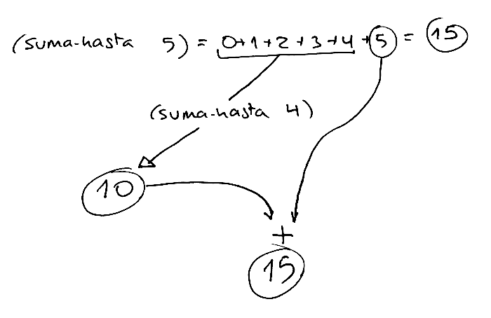
We generalize this example and express it in Scheme as follows:
(define (suma-hasta x)
(+ (suma-hasta (- x 1)) x))
We are missing the base case of recursion. We must ask ourselves what is the
simplest case of the problem, that we can calculate without making any
recursive calls?. In this case it could be the case where x is 0, where we
would return 0.
We can now write everything in Scheme:
(define (suma-hasta x)
(if (= 0 x)
0
(+ (suma-hasta (- x 1)) x)))
A clarification on the general case. In the previous implementation the
recursive call to suma-hasta is made in the first argument of the sum:
(+ (suma-hasta (- x 1)) x)
The previous expression is totally equivalent to the following one in which the recursive call appears as the second argument
(+ x (suma-hasta (- x 1)))
Both expressions are equivalent because in functional programming the order in which the arguments are evaluated does not matter. It makes no difference to evaluate them from right to left or from left to right. Referential transparency guarantees that the result is the same.
2.7.3. Function (alfabeto-hasta char)¶
Let's go with another example. We want to design a function (alfabeto-hasta
char) that returns a string that starts with the letter a and ends with the
character we pass as a parameter.
For example:
(alfabeto-hasta #\h) ; ⇒ "abcdefgh"
(alfabeto-hasta #\z) ; ⇒ "abcdefghijklmnopqrstuvwxyz"
We think about the general case: how could we invoke the alfabeto-hasta
function itself so that (taking the recursive leap of faith) it does much of the work for us
(builds almost the entire string with the alphabet)?
We could have the recursive call return the alphabet up to the character previous to the one passed to us as a parameter and then add that character to the string returned by the recursion.
Let's look at a concrete example:
(alfabeto-hasta #\h) = (alfabeto-hasta #\g) + \#h
The recursive call (alfabeto-hasta #\g) would return the string "abcdefg"
(taking the recursive leap of faith) and only the last letter would need to be added.
To implement this idea in Scheme all we need is to use the string-append
function to concatenate strings and a helper function (anterior char) that
returns the character before a given one.
(define (anterior char)
(integer->char (- (char->integer char) 1)))
The general case would be as follows:
(define (alfabeto-hasta char)
(string-append (alfabeto-hasta (anterior char)) (string char)))
The base case would be missing. What is the simplest possible case that you
can ask us for? The case of the alphabet up to #\a. In that case it is
enough to return the string "a".
The complete function would look like this:
(define (alfabeto-hasta char)
(if (equal? char #\a)
"a"
(string-append (alfabeto-hasta (anterior char)) (string char))))
2.8. Recursion and lists¶
Using recursion is very useful for working with sequential structures, such as lists. We are going to start by looking at some simple examples and later we will see some more complicated ones.
2.8.1. Recursive function suma-lista¶
Let's look at a first example, the function (suma-lista lista-nums) that
receives a list of numbers as a parameter and returns the sum of all of them.
We should always start by writing an example of the function, to understand it well:
(suma-lista '(12 3 5 1 8)) ; ⇒ 29
To design a recursive implementation of the function we have to think about how to decompose the example into a recursive call to a smaller problem and how to treat the value returned by the recursion to obtain the expected value.
For example, in this case we can think that to add the list of numbers (12 3
5 1 8) we can obtain a simpler problem (a smaller list) by doing the rest
of the list of numbers and calling recursion with the result. The recursive
call will return the sum of those numbers (we take the recursive leap of faith) and to that
value it is enough to add the first number in the list. We can represent it in
the following drawing:

We can generalize this example and express it in Scheme in the following way:
(define (suma-lista lista)
(+ (first lista) (suma-lista (rest lista))))
The base case is missing. What is the simplest list with which we can calculate the sum of its elements without calling recursion? The simplest list is a list with no elements, and we return 0.
With everything together, the recursion would look like this:
(define (suma-lista lista)
(if (null? lista)
0
(+ (first lista) (suma-lista (rest lista)))))
2.8.2. Recursive function longitud¶
Let's see how to define the recursive function that returns the length of a list, the number of elements it contains.
Let's start as always with an example:
(longitud '(a b c d e)) ; ⇒ 5
Assuming that the longitud function works correctly, how could we formulate
the general case for recursion? how could we call recursion with a smaller
problem and how can we leverage the result of this call to get the final
result?
In this case it is quite simple. If we remove an element from the list, when we call the recursion it will return the original length minus one. In this case:
(longitud (rest '(a b c d e))) ; ⇒
(longitud '(b c d e )) ⇒ (confiamos en la recursión) 4
In this way, to get the length of the initial list, we would only have to add 1 to what the recursive call returns.
If we express this general case in Scheme:
; Sólo se define el caso general, falta el caso base
(define (longitud lista)
(+ (longitud (rest lista)) 1))
To define the base case we must ask ourselves what is the simplest case that we can pass to the function. If in each recursive call we reduce the length of the list, the base case will receive the empty list. What is the length of an empty list? An empty list has no elements, so it is 0.
In this way we complete the definition of the function:
(define (longitud lista)
(if (null? lista)
0
(+ (longitud (rest lista)) 1)))
In Scheme there is the function length that does the same thing. Returns the
length of a list:
(length '(a b c d e)) ; ⇒ 5
2.8.3. How to check if a list has a single element¶
In the base case of some recursive functions it is necessary to check that the
list passed as a parameter has a single element. Since the function length
is defined in Scheme, the first idea that may occur to us is to check if the
length of the list is 1. However, it is a bad idea.
; Ejemplo de función recursiva con un caso
; base en el que se comprueba si la lista tienen
; un único elemento
; ¡¡MALA IDEA, NO HACERLO ASÍ!!
(define (foo lista)
(if (= (length lista) 1)
; devuelve caso base
; caso general
))
The problem with the above implementation is that the cost of the function
length is linear. As we have seen in the previous section, to calculate the
length of the list it is necessary to go through all its elements.
Additionally, the recursive function does that check on each recursive call.
The resulting cost of the function foo, therefore, is quadratic.
How to improve the cost? Keep in mind that the previous check is doing extra
things. We don't really want to know the length of the list but only if that
length is greater than one. This verification can be done in constant time.
The only thing we need to do is check if the rest in the list is the empty
list. If it is, we already know that the original list had a single element.
Therefore, the correct version of the previous code would be the following:
; Versión correcta para comprobar si una lista tiene
; un único elemento
(define (foo lista)
(if (null? (rest lista))
; devuelve caso base
; caso general
))
The cost of the (null? (rest lista)) check is constant. It does not depend
on the length of the list.
2.8.4. Recursive function veces¶
As a last example we are going to define the function
(veces lista id)
which counts the number of times an identifier appears in a list.
For example,
(veces '(a b c a d a) 'a ) ; ⇒ 3
How do we state the general case? We'll call the recursion with the rest of the list. This call will return the number of times the identifier appears in this rest of the list. And we will add 1 to the returned value if the first element in the list matches the identifier.
In Scheme you have to define this general case in a single expression:
(if (equal? (first lista) id)
(+ 1 (veces (rest lista) id))
(veces (rest lista) id))
As a base case, if the list is empty we return 0.
The full version:
(define (veces lista id)
(cond
((null? lista) 0)
((equal? (first lista) id) (+ 1 (veces (rest lista) id)))
(else (veces (rest lista) id))))
(veces '(a b a a b b) 'a) ; ⇒ 3
3. Composite data types in Scheme¶
3.1. The Pair Data Type¶
3.1.1. Pair Constructor Function cons¶
We have already seen in the Scheme seminar that the simplest composite data
type is the pair: an entity made up of two elements. The cons function is
used to build it:
(cons 1 2) ; ⇒ (1 . 2)
(define c (cons 1 2))
We draw the previous pair and the variable c that reference it as follows:
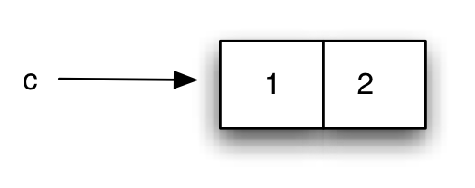
Composite pair type
The cons expression constructs a composite data item from two other data
items (which we will call left and right). The expression (1 . 2) is the way
the interpreter prints pairs.
3.1.2. Pair construction with quote¶
Like lists, it is possible to construct pairs with the special form quote,
defining the pair in parentheses and separating its left and right parts with
a period:
'(1 . 2) ; ⇒ (1 . 2)
We will sometimes use cons and other times quote to define pairs. But we
must keep in mind that, as with lists, quote does not evaluate its
parameters, so we should not use it, for example, within a function in which
we want to build a pair with the results of evaluating expressions.
For example:
(define a 1)
(define b 2)
(cons a b) ; ⇒ (1 . 2)
'(a . b) ; ⇒ (a . b)
3.1.3. Access functions car and cdr¶
Once a pair has been constructed, we can obtain the element corresponding to
its left part with the function car and its right part with the function
cdr:
(define c (cons 1 2))
(car c) ; ⇒ 1
(cdr c) ; ⇒ 2
3.1.3.1. Declarative definition¶
The functions cons, car and cdr are perfectly defined with the following
algebraic equations:
(car (cons x y)) = x
(cdr (cons x y)) = y
Where do the names car and cdr come from?
Initially the names were CAR and CDR (in capital letters). The story goes back to 1959, at the origins of Lisp and has to do with the name given to certain memory registers of the IBM 709.
We can read the full explanation in The origin of CAR and CDR in LISP.
3.1.4. Function pair?¶
The pair? function tells us if an object is atomic or a pair:
(pair? 3) ; ⇒ #f
(pair? (cons 3 4)) ; ⇒ #t
3.1.5. Pairs can contain any type of data¶
We have already verified that Scheme is a weakly typed language. Functions can return and receive different types of data.
For example, we could define the following function suma that adds both
numbers and strings:
(define (suma x y)
(cond
((and (number? x) (number? y)) (+ x y))
((and (string? x) (string? y)) (string-append x y))
(else 'error)))
In the previous function the parameters x and y can be numbers or strings
(or even any other type). And the value returned by the function will be a
number, a string, or the symbol 'error.
The same thing happens with the content of pairs. It is possible to save any type of data in pairs and combine different types. For example:
(define c (cons 'hola #f))
(car c) ; ⇒ 'hola
(cdr c) ; ⇒ #f
3.1.6. Pairs are Immutable Objects¶
Let us remember that in declarative and functional programming paradigms there is no mutable state. Once a value is declared, it cannot be modified. This should also happen with pairs: once a pair is created, its content cannot be modified.
In standard Lisp and Scheme, pairs can be mutated. But during this entire first part of the course we will not contemplate it, so as not to leave the functional paradigm.
In Swift and other programming languages it is possible to define immutable data structures that cannot be modified once created. We will also see it later.
3.2. Pairs are First-Class Objects¶
In a programming language an element is first-class when it can be:
- Assigned to variables
- Passed as an argument
- Returned by a function
- Saved in a larger data structure
Pairs are first-class objects.
A pair can be assigned to a variable:
(define p1 (cons 1 2))
(define p2 (cons #f "hola"))
A pair can be passed as an argument and returned in a function:
(define (suma-parejas p1 p2)
(cons (+ (car p1) (car p2))
(+ (cdr p1) (cdr p2))))
(suma-parejas '(1 . 5) '(4 . 12)) ; ⇒ (5 . 17)
Once this suma-parejas function is defined, we could extend the suma
function that we saw previously with this new type of data:
(define (suma x y)
(cond
((and (number? x) (number? y)) (+ x y))
((and (string? x) (string? y)) (string-append x y))
((and (pair? x) (pair? y)) (suma-parejas p1 p2))
(else 'error)))
And finally, pairs can be part of other pairs.
This is what is called the closure property of the cons function: the
result of a cons can be used as a parameter for new calls to cons.
Example:
(define p1 (cons 1 2))
(define p2 (cons 3 4))
(define p (cons p1 p2))
Equivalent expression:
(define p (cons (cons 1 2)
(cons 3 4)))
We could represent this structure like this:
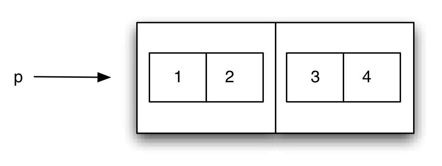
Closure property: pairs can contain pairs
But it would become very complicated to represent many levels of nesting. That is why we use the following representation:
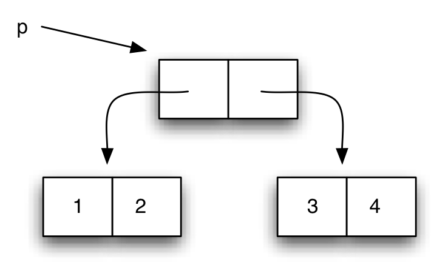
We call these diagrams box-and-pointer diagrams.
3.3. box-and-pointer diagrams¶
When writing complicated expressions with nested cons, it is advisable to
use the following format to improve readability:
(define p (cons (cons 1
(cons 3 4))
2))
To understand the construction of these structures it is important to remember that expressions are evaluated from inside to outside.
What figure would represent the previous structure?
Solution:
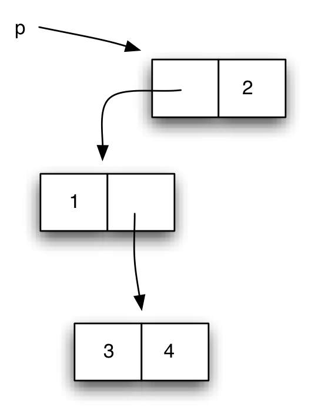
It is important to note that each box in the diagram represents a pair created
in the interpreter's memory with the cons instruction, and that the result
of evaluating a variable in which a pair has been stored returns the newly
created pair. For example, if the interpreter evaluates p after having made
the previous statement and returns the pair contained in p, a new pair is
not created.
For example, if after having evaluated the previous statement we evaluate the following:
(define p2 (cons 5 (cons p 6)))
The resulting box-and-pointer diagram would be the following:
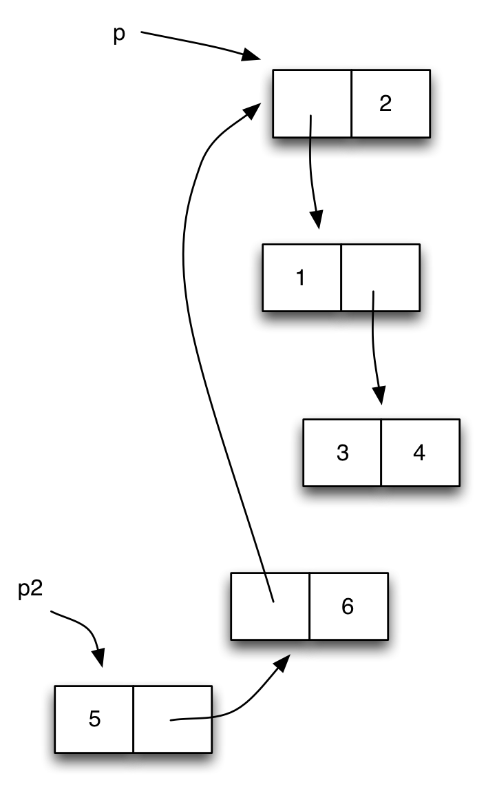
We see that in the pair created with (cons p 6) the same pair that is
in p is saved on the left side. We represent it with an arrow pointing to
the same pair as p.
Note
The way variables that contain pairs are evaluated is similar to that of variables that contain objects in object-oriented languages such as Java. When a variable containing a pair is evaluated, the pair itself is returned, not a copy.
In functional programming, since the content of the pairs is immutable, there are no side effects problems due to the fact that a pair is shared.
It is advisable that you try to create different pair structures and draw their box-and-pointer diagrams. And also to recover a certain data (pair or atomic data) once the structure has been created.
The following function print-pareja can be useful when displaying the
elements of a pair on the screen
(define (print-pareja pareja)
(if (pair? pareja)
(begin
(display "(")
(print-dato (car pareja))
(display " . ")
(print-dato (cdr pareja))
(display ")"))
(display "")))
(define (print-dato dato)
(if (pair? dato)
(print-pareja dato)
(display dato)))
Careful!
The above function contains execution steps with statements like
begin and calls to display within the function code. These
sentences are typical of imperative programming. Do not do it in
functional programming.
3.3.1. Functions c????r¶
When working with nested pair structures, it is very common to make calls like:
(cdr (cdr (car p))) ; ⇒ 4
It is equivalent to Scheme's cadar function:
(cddar p) ; ⇒ 4
The name of the function is obtained by concatenating the letters "a" or "d" to the letter "c", depending on whether we make a car or a cdr and ending with the letter "r".
There are 2^4 functions of this type defined: caaaar, caaadr, …, cddddr.
In addition to 4-letter combinations, there are also 3, 2, and 1-letter combinations. In total there are 30 functions of this type: 2^1 + 2^2 + 2^3 + 2^4 = 2 + 4 + 8 + 16 = 30
4. Lists in Scheme¶
4.1. Implementation of lists in Scheme¶
Let's remember that Scheme allows handling lists as a basic data type. We have seen functions to create, add and traverse lists.
In Scheme lists are implemented using pairs, so the functions car and cdr
also work on lists.
What do they return when applied to a list? How are lists with pairs implemented? Let's investigate it by doing some tests.
First, we're going to use the list? and pair? functions to check if
something is a list and/or a pair.
For example, a pair made up of two numbers is a pair, but it is not a list:
(define p1 (cons 1 2))
(pair? p1) ; ⇒ #t
(list? p1) ; ⇒ #f
If we ask if a list is a pair, we will be surprised that it is. A list is a list (obviously) but it is also a pair:
(define lista '(1 2 3))
(list? lista); ⇒ #t
(pair? lista); ⇒ #t
If a list is also a pair, we can also apply the functions car and cdr with
them. What do they return? Let's see it:
(define lista '(1 2 3))
(car lista) ; ⇒ 1
(cdr lista) ; ⇒ (2 3)
It turns out that in the pair that represents the list, the first element of the list is stored on the left side and the rest of the list is stored on the right side.
We can also explain then why the call to cons with a datum and a list builds
another list:
(define lista '(1 2 3))
(define p1 (cons 1 lista))
(list? p1) ; ⇒ #t
p1 ; ⇒ (1 1 2 3)
Is a pair with an empty list as the right side a list? We tried it:
(define p1 (cons 1 '()))
(pair? p1) ; ⇒ #t
(list? p1) ; ⇒ #t
With these examples we already have clues to deduce the relationship between lists and pairs in Scheme (and Lisp). Let's explain it.
4.1.1. Defining lists with pairs¶
A list is:
- A pair that contains the first element of the list on its left side and the rest of the list on its right side
- A special symbol
'()denoting the empty list
It should be noted that the above definition is a recursive definition.
For example, a very simple list with a single element, (1), is defined with
the following pair:
(cons 1 '())
The pair meets the previous conditions:
- The left side of the pair is the first element in the list (number 1)
- The right part is the rest of the list (the empty list)
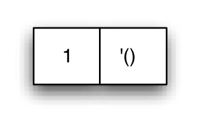
The list (1)
The object is both a pair and a list. The list? function allows you to check
if an object is a list:
(define l (cons 1 '()))
(pair? l)
(list? l)
For example, the list '(1 2 3) is constructed with the following sequence of pairs:
(cons 1
(cons 2
(cons 3
'())))
The first pair meets the conditions of being a list:
- Its first element is 1
- Its right side is the list '(2 3)
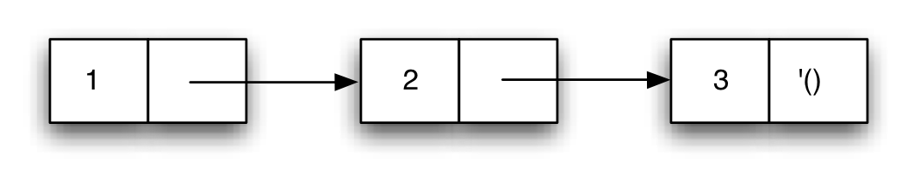
Pairs forming a list
By checking the implementation of lists in Scheme, we understand why the
functions car and cdr return the first element and the rest of the list.
In fact, the first and rest functions are implemented using the car and
cdr functions. When we work with lists we will always use the functions
first and rest, which are the functions of the list abstraction barrier.
4.1.2. Empty list¶
The empty list is a list:
(list? '()) ; ⇒ #t
And it is not a symbol or a pair:
(symbol? '()) ; ⇒ #f
(pair? '()) ; ⇒ #f
To know if an object is the empty list, we can use the null? function:
(null? '()) ; ⇒ #t
In Racket, the symbol null is predefined, which has the empty list as its
value:
null ; ⇒ ()
4.2. Lists with composite elements¶
Lists can contain any type of elements, including other pairs.
The following structure is called association list. They are lists whose elements are pairs (key, value):
(list (cons 'a 1)
(cons 'b 2)
(cons 'c 3)) ; ⇒ ((a . 1) (b . 2) (c . 2))
What would be the box-and-pointer diagram of the above structure?
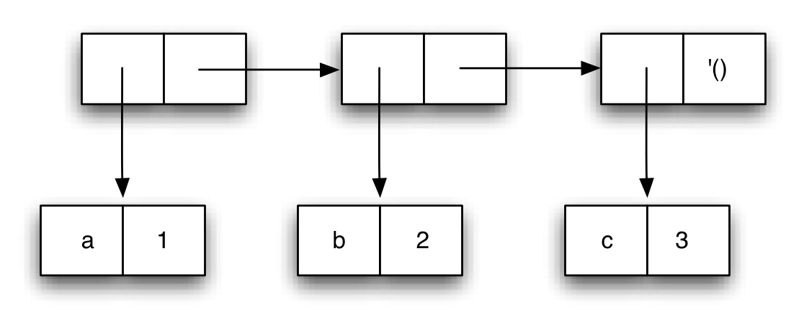
The equivalent expression using conses is:
(cons (cons 'a 1)
(cons (cons 'b 2)
(cons (cons 'c 3)
'())))
4.2.1. Lists of lists¶
We have seen that we can construct lists that contain other lists:
(define lista (list 1 (list 1 2 3) 3))
The above list can also be defined with quote:
(define lista '(1 (1 2 3) 3))
The resulting list contains three elements: the first and last are atomic elements (numbers) and the second is another list.
If we ask about the length of the list Scheme will tell us that it is a list of 3 elements:
(length lista) ; ⇒ 3
And the second element of the list is another list:
(second lista) ; ⇒ (1 2 3)
Second, third, ..., tenth functions
In Racket there are functions that return the second, third, ... and
so on up to the tenth element of a list. They are the functions
second, third, ..., tenth. They can be consulted in the
language reference
manual.
How does Scheme implement this list using pairs?
Being a list of three elements, it will have three linked pairs that end in an empty list on the right side of the last pair. On the left sides of these three pairs we will have the list elements themselves: a 1 and a 3 in the first and last pair and a list in the second pair.
The box-and-pointer diagram:
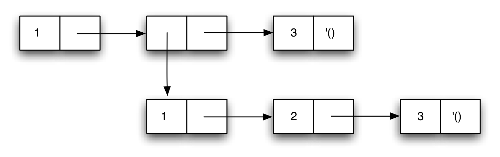
List containing another list as second element
4.2.2. Printing of lists and pairs by the Scheme interpreter¶
The Scheme interpreter always tries to display a list when it finds a pair whose next element is another pair.
For example, if we have the following structure:
(define p (cons 1 (cons 2 3)))
When p is evaluated, the interpreter will print the following on the screen:
(1 2 . 3)
Because? Because the interpreter builds the output as it runs through the p
pair. Since it finds a pair whose right side is another pair, it interprets it
as the beginning of a list, and that's why it writes (1 2 instead of (1 .
2. But immediately afterwards you find the 3 instead of an empty list. At
that point the interpreter "realizes" that we don't have a list and ends the
expression by writing the . 3 and the final parenthesis.
If we want to check the structure of pairs we can use the function
print-pareja defined above, which would print the following:
(print-pareja p) ; ⇒ (1 . (2 . 3))
4.2.3. High-level functions on lists¶
It is important to know how lists are implemented using pairs and their representation with box-and-pointer diagrams to define higher-order functions.
Once the implementation details are known, we can return to using functions
that have a higher level of abstraction such as first and rest. They are
functions that have an understandable name and that perfectly communicate what
they do (return the first element and the rest).
(first '(a b c d)) ; ⇒ a
(rest '(a b c d)) ; ⇒ (b c d)
There are other higher-order functions that work on lists. Some we already know, but others we don't:
(append '(a (b) c) '((d) e f)) ; ⇒ (a (b) c (d) e f)
(list-ref '(a (b) c d) 2) ; ⇒ c
(length '(a (b (c))) ; ⇒ 2
(reverse '(a b c)) ; ⇒ (c b a)
(list-tail '(a b c d) 2) ; ⇒ (c d)
6. Bibliography¶
Chapters of the book Structure and Interpretation of Computer Programs:
- 1.1 The Elements of Programming
- 1.3 Formulating Abstractions with Higher-Order Procedures
- 2.2.1 Representing Sequences
Programming Languages and Paradigms, academic year 2025-26 © Department of Computer Science and Artificial Intelligence, University of Alicante Domingo Gallardo, Cristina Pomares, Antonio Botía, Francisco Martínez